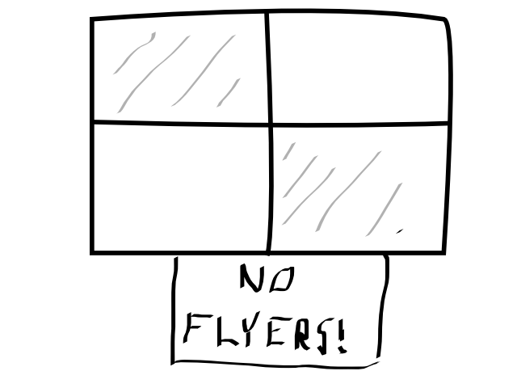

readme
Table of Contents
1 Flyer.js

flyer.js is a lightweight messaging library written for clojurescript & javascript.
It provides broadcast messaging between frames, iframes, and windows.
2 Features and Operation
- Simple API, from which you can build more elaborate messaging systems.
- Messages are broadcasted to all frames and registered windows, regardless of whether or not they want them (hence, the name)
- Frames can subscribe to specific channels, and can pattern-match to specific topics being sent on that channel
3 Javascript Configuration
- Include flyer.js and flyer-wrapper.js at the end of your page
body
<script type="text/javascript" src="./js/flyer.js"></script> <script type="text/javascript" src="./js/flyer-wrapper.js"></script>
The flyer-wrapper file is only necessary if you wish to refer to the API functions from flyer, and not flyer.wrapper
- In situations where you would use window.open, use flyer.window.open instead. This is required in order to track window references.
4 Download
5 Javascript API
5.1 flyer.broadcast([Options])
if you aren't using flyer-wrapper, use flyer.wrapper.broadcast instead
5.1.1 Options
- channel
- the channel you wish to broadcast on. default is "*", which stands for all channels
- topic
- the topic of your broadcast message. default is "*", which stands for all topics
- data
- any JSON serializable object
5.1.2 Examples
flyer.broadcast({
channel: "default",
topic: "person.insert",
data: {id: 1, name: "Ben"}
});
flyer.broadcast({
channel: "default",
topic: "person.delete",
data: {id: 1}
});
5.2 flyer.subscribe([Options])
if you aren't using flyer-wrapper, use flyer.wrapper.subscribe instead
5.2.1 Options
- channel
- the channel you wish to subscribe to. default is "*", which stands for all channels
- topic
- the topic you wish to subscribe to. default is "*", which stands for all topics. Note that this can also be a string representation of a regex expression.
- callback
- callback function of the form function(data, [topic],[channel]) that you wish to call when the subscription is made.
5.2.2 Examples
flyer.subscribe({
channel: "default",
topic: "person.*",
callback: function(data, topic, channel) {
if (topic == "person.insert") {
console.log("Inserted Person! - " + data.name);
}
else if (topic == "person.delete") {
console.log("Removed Person with id - " + data.id);
}
}
});
5.3 flyer.window.open(url, name, [Options])
follows the same API as window.open
6 Clojurescript API (untested)
6.1 flyer.messaging/broadcast
6.1.1 (broadcast & options)
6.1.2 Options
- channel
- the channel you wish to broadcast on. default is "*", which stands for all channels
- topic
- the topic of your broadcast message. default is "*", which stands for all topics
- data
- any JSON serializable object
6.1.3 Example
(broadcast :channel "default" :topic "person.insert" :data {:id 1 :name "Ben"})
6.2 flyer.messaging/subscribe
6.2.1 (subscribe & options)
6.2.2 Options
- channel
- the channel you wish to subscribe to. default is "*", which stands for all channels
- topic
- the topic you wish to subscribe to. default is "*", which stands for all topics. Note that this can also be a string representation of a regex expression.
- callback
- callback function of the form (fn [data] [topic] [channel] …) that you wish to call when the subscription is made.
6.2.3 Example
(subscribe :channel "default" :topic "person.*" :callback (fn [data topic channel] (condp = topic "person.insert" (.log js/console "Inserting person! - " (.-name data)) "person.delete" (.log js/console "Deleting person! - #" (.-id data)))))
6.3 flyer.window/open
6.3.1 (open url name & options)
6.3.2 url parameter
The window URL
6.3.3 name parameter
The unique name you wish to give the window
6.3.4 Options
key / value pairs of options equivalent to window.open options
6.3.5 Example
(open "frame_login.html" "login-page" :width 400 :height 600)
7 Example
In the works
8 Project Compilation
- Clone this Repository
- Install Leiningen
- cd into flyer.js directory
- type lein deps
- type lein cljsbuild once
- resulting flyer.js should now be present in ./resources/public/js/, along with flyer-wrapper.js
9 Issues
- In order to communicate with frames and windows that are within an external window, you need to replace window.open with flyer.window.open
- The size of flyer.js is quite big, at a whopping 500kb. This is due to the nature of compilation. a flyer.min.js is in the works, which should bring down the size by an order of magnitude.
- Refreshing the parent window of an opened window will break any messages from being broadcasted throughout the application. I might include functionality to inform the external window of these actions, so the external window can inform the user of what happened.
- external windows can be refreshed without losing communications, however, it requires that flyer.js be included within that html page